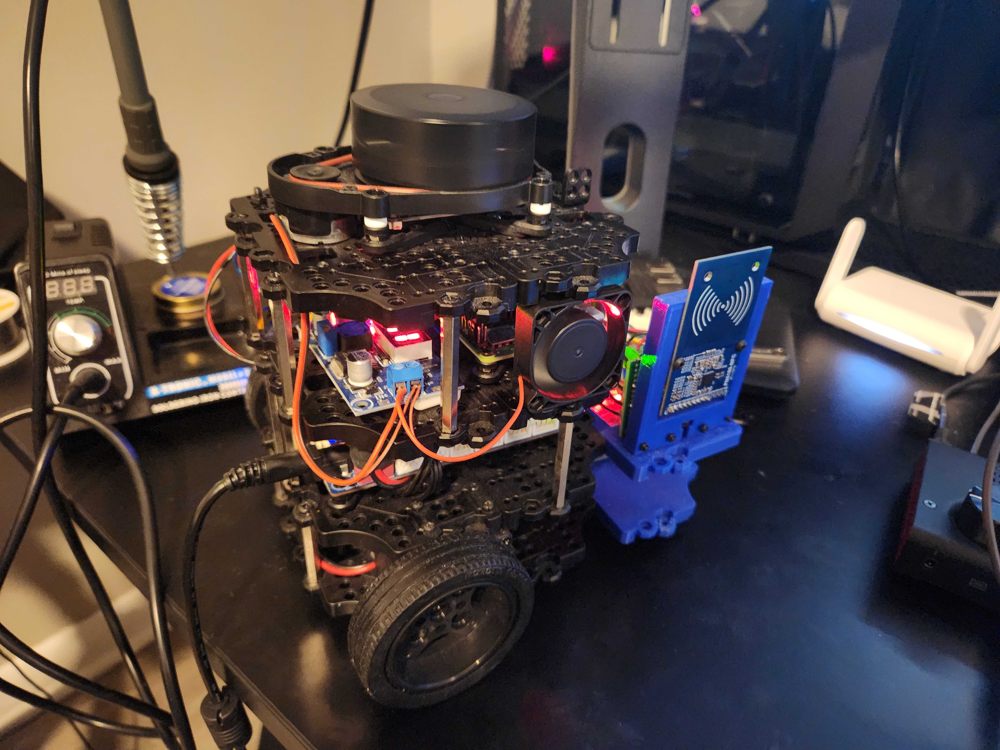

Cool Down / Integration
November 16, 2024
Today’s Summary:
I set up a spare Raspberry Pi 4B+ as a Docker image registry server, configured to run automatically on power-up and accessible over my home Wi-Fi. Additionally, I reinstalled the fan I pilfered from the Pi case I am now using for docker and connected a 12V fan to the buck converter used to power the Arduino. Finally, I integrated my custom RFID publishing package into the turtlebot3_bringup_custom package. This package processes serial data from the RFID assembly and publishes detected IDs to the /rfid topic.

Details:
I finally got around to turning a spare pi 4B+ into a docker image registry server. It is now configured to automatically run the registry container on power on and is on my home wifi. I can plug it in and stow it anywhere and access my development images as needed at home.
In doing the above, I returned the fan back to the pi case and I installed a small spare 12v fan I had lying around. I tied it’s power into the input terminals for the stepdown converter (stepping 12v from the OPENCR board) down to the 5V of the arduino.
Lastly, today I integrated my custom rfid publishing package into the turtlebot3_bringup_custom package which I had previously containerized. This package translates incoming serial data from the rfid assembly and outputs the detected rfid identity to the /rfid topic for later use.